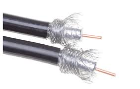
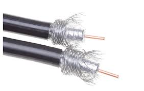

Existen dos tipos de cable coaxial:
- Coaxial fino: Se utiliza en las instalaciones de redes de área local se denomina RG-58
- Coaxial grueso: Se conoce comercial mente con el nombre RG-8A/U

Existen dos tipos de cable coaxial:

Obra publicada con Licencia Creative Commons Reconocimiento Compartir igual 4.0